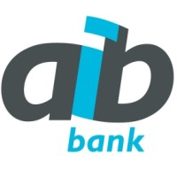
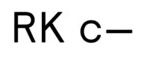

Sophy Figaroa
Education
Pomona College
B.A. Computer Science & Media Studies
Claremont, CA
GPA: 3.82 / 4.00
Relevant Coursework: Machine Learning, Economic Statistics, Human-Centered Design, Data Visualization, Big Data
May 2026
Vrije Universiteit Amsterdam
Foundations of International Business Management and Creative Coding
Amsterdam, Netherlands
Grade: 8.5 / 10
Summer 2023
Skills
Technical
Python, Java, JavaScript, SQL, P5.js, Three.js, A-Frame, D3.js, HTML/CSS, Git
Data & Design
Power BI, Microsoft Excel, Figma, Stata
Languages
Papiamento (Fluent) · Dutch (Professional Working) · Spanish (Conversational) · French (Basic)
Relevant Work Experience

AIB'" />- Built automated M Query workflows in Power BI to collect, clean, and integrate 10+ national economic indicators (interest rates, government bonds, consumer/business indexes, tourism, etc.), auto-populating tables and generating visualizations — eliminating manual Excel entry for the Corporate Finance team, accelerating macroeconomic trend analysis, and enabling more data-driven loan pricing decisions.
- Analyzed core banking system migration requirements — including cloud feasibility, integration architecture, and vendor assessments — to support executive selection of a new core banking vendor for an acquired commercial bank.

- Collaborating with a team of 3 programmers to build embroidery design software (P5.js, Next.js, Python) with multi-level abstraction — stitch, design, and shape views — providing users greater precision and flexibility in pattern creation.
- Designing and iterating software interfaces in Figma and implementing responsive, user-centered front-end components in React to ensure an intuitive and cohesive user experience.

- Designing interactive 2D, 3D, and 4D (time-evolving) visualizations of Los Angeles high-rise responses to scenario earthquakes, transforming displacement time-series datasets into dynamic simulations using Python and P5.js to help Caltech researchers visualize structural responses and assess potential vulnerabilities.
PC'" />
- Mentoring 25 students weekly in Intro to Computer Science and Theory of Computation, clarifying complex concepts and fostering analytical problem-solving.

RK'" />- Tracked media coverage, compiled press data, and delivered comprehensive reports for 13 clients, enhancing strategic PR campaigns while improving organization and product discovery across fashion collections.
Clubs & Projects
- Investigated Estonia's e-government data exchange network (X-Road) through interviews with 2 government officials and review of technical documentation, documenting the system's secure, interoperable architecture and highlighting how similar solutions can enable small states to build digital societies with limited resources.
- Analyzed annual reports and pitched 5 consumer companies, providing strategic recommendations on long-term growth prospects to guide investment decisions for $1.25M of Pomona College's Endowment.